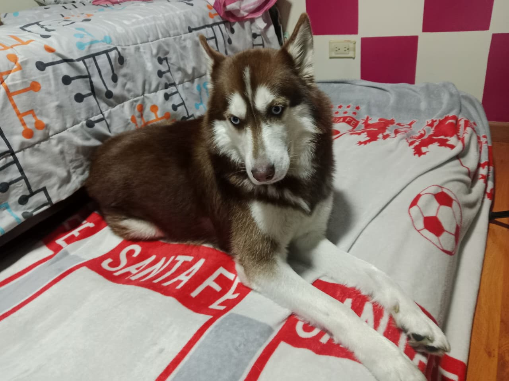

Ofrecemos atención profesional, comodidad y confianza para el bienestar de tu mascota.
Llevamos nuestros servicios veterinarios directamente hasta tu hogar.
Tratamos a cada mascota con cariño, paciencia y profesionalismo.
Reserva citas rápidamente desde cualquier dispositivo.
Personal veterinario preparado para brindar atención segura y confiable.